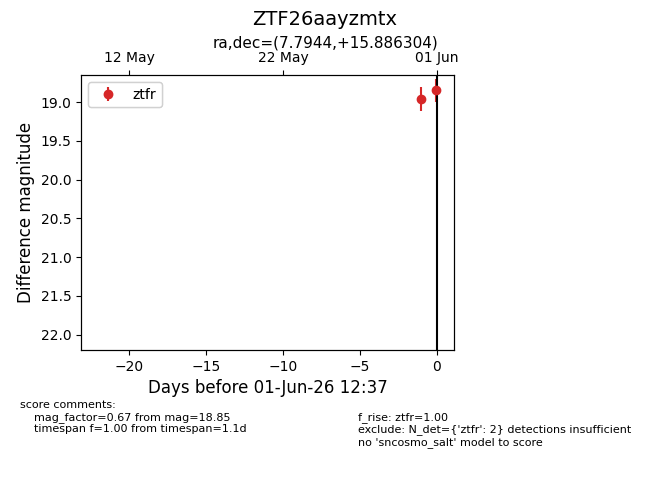
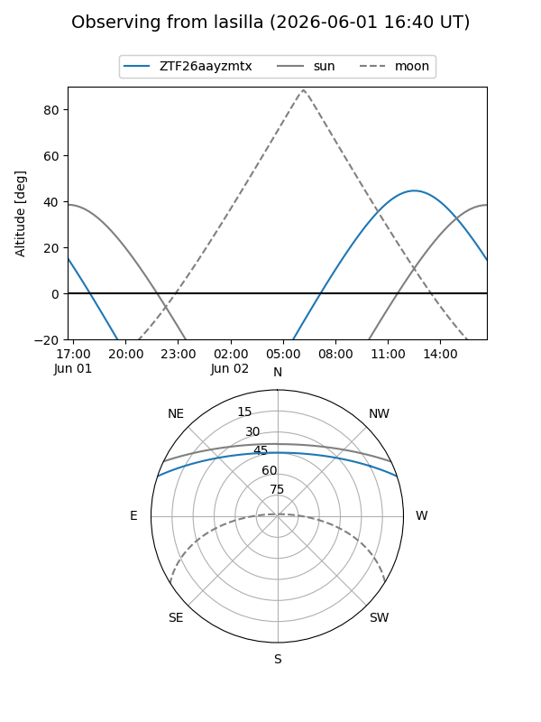
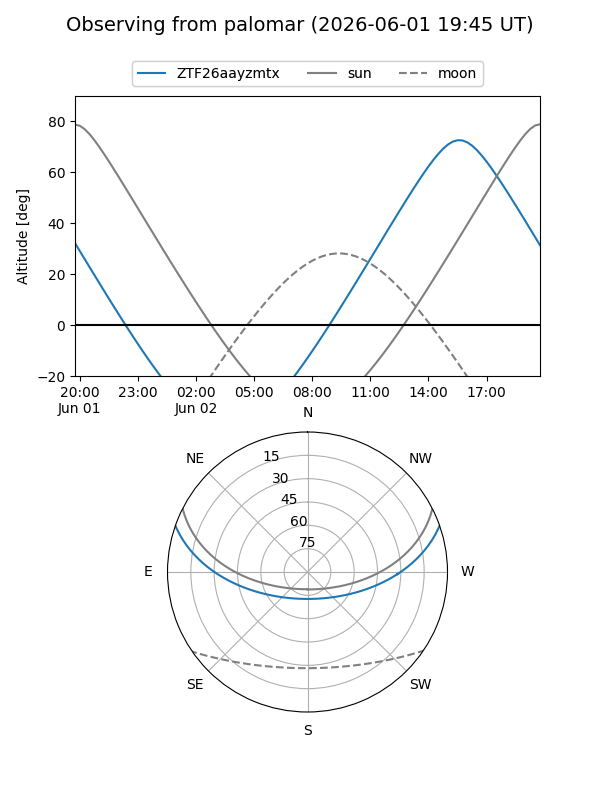

ZTF26aayzmtx
Target ZTF26aayzmtx at 2026-06-01 12:38
Aliases and brokers:
lsst-FINK: link
lsst-Lasair: link
lsst-ALeRCE: link
ztf-FINK: link
ztf-Lasair: link
ztf-ALeRCE: link
alt names
ZTF26aayzmtx (ztf,fink_ztf)
Coordinates:
equatorial (ra, dec) = 7.7944,+15.88630
equatorial (HMS+DMS) = 00:31:10.66,+15:53:10.69
galactic (l, b) = (115.8189,-46.70544)
Flags:
Photometry:
last ztfr=18.85
2 ztfr detections
Lightcurve

Visibility


Additional plots